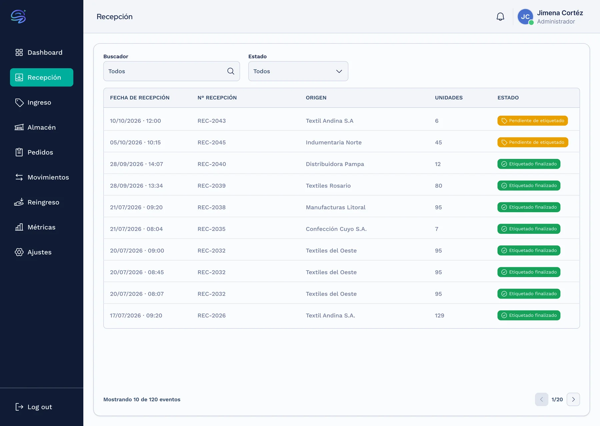
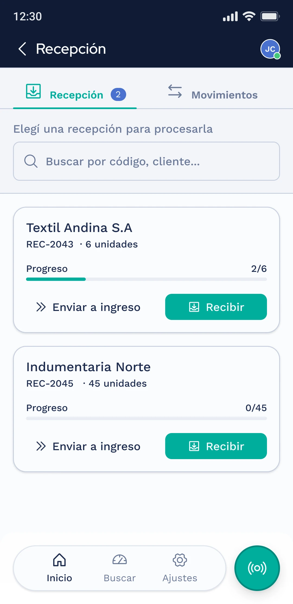
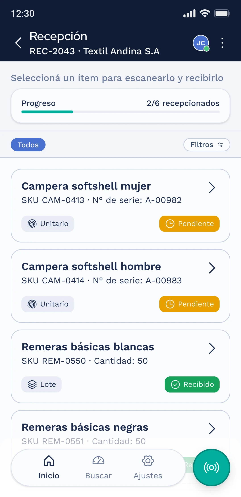
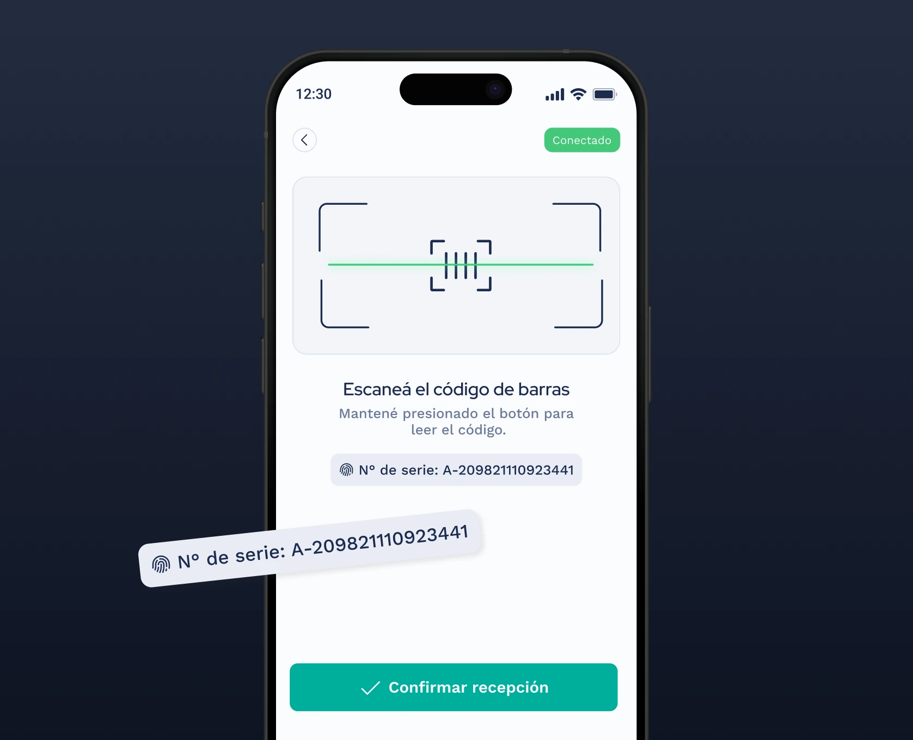
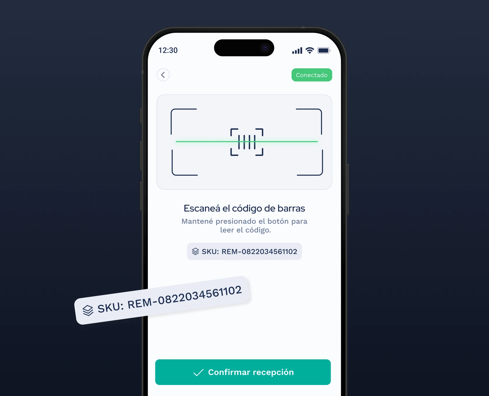
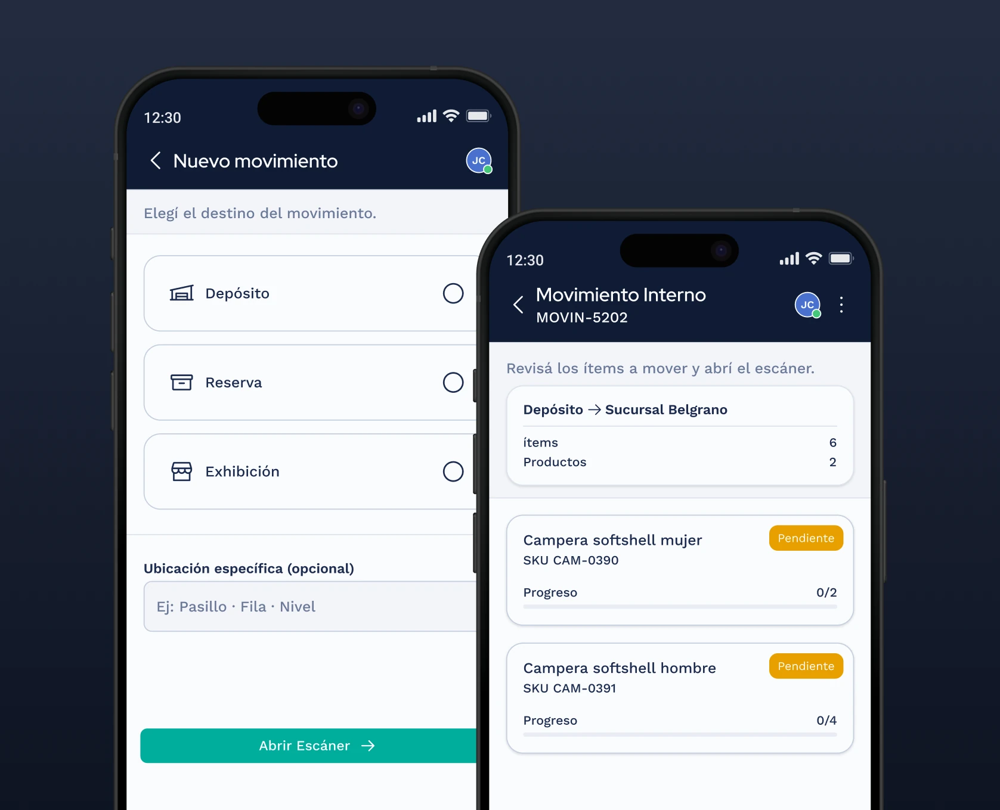
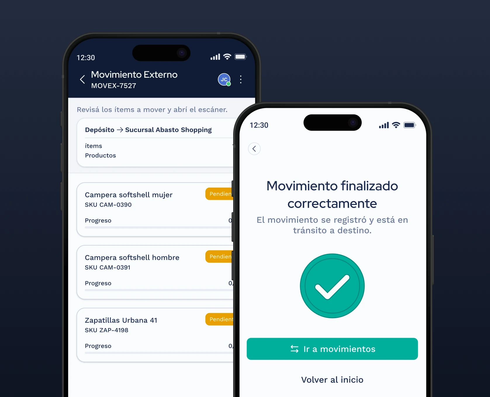
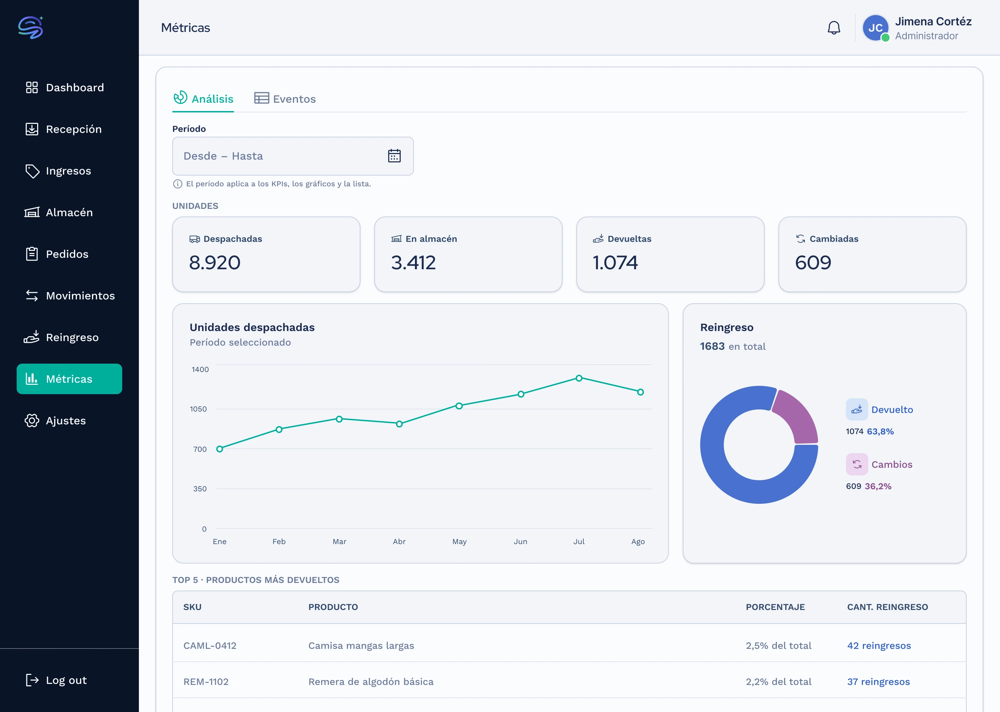

Mobile
Operario de depósito
- Recepción
- Ingreso
- Picking
- Movimiento
- Despacho
- Reingreso
Hardware Lector RFID + código de barras
Saber qué hay en un depósito es fácil. Saber dónde está cada unidad, quién la movió y cuándo, no. Diseñé un sistema de trazabilidad que combina lectura RFID y código de barras, con la operación en mobile y el control en web.
Hardware Lector RFID + código de barras
Hardware — solo supervisión
Recibir mercadería es la parte simple. El problema aparece después: cada traslado interno, cada salida y cada reingreso es una oportunidad de perder la pista de una unidad.
Antes de Siotyx, el inventario vivía en planillas y en el criterio de quien lo cargaba. El sistema tuvo que redefinir qué significa trazar: no contar cuánto hay, sino registrar cada evento que toca una unidad a lo largo de toda su vida en el depósito.
Tocá una etapa para ver qué resuelve
Lo que llega se cuenta y se valida contra lo esperado. El operario escanea de a uno o por lote, y la interfaz tolera lecturas parciales y el estado sin conexión: la playa no siempre tiene señal.
Cada ítem recibe su tag y su ubicación. La pantalla cambia según de dónde viene el dato: tipo de producto externo o tipo de producto desde Siotyx. Dos variantes del mismo paso.
El operario arma pedidos recorriendo el depósito. El lector lo guía físicamente hasta cada etiqueta con el manómetro de proximidad, y la ubicación se desglosa en Pasillo, Fila y Nivel.
La mercadería sale contra un pedido. El sistema confirma cada unidad despachada y deja el movimiento registrado, así la salida queda atada a su pedido de origen.
Fuera del recorrido lineal, dos eventos pueden reabrirlo: Movimiento (un ítem cambia de ubicación, interno o externo) y Reingreso (lo que vuelve se reincorpora al stock con su historial intacto).
La división de plataformas no es por comodidad: responde a dónde ocurre el trabajo. El administrador necesita ver el depósito; el operario necesita intervenirlo.
Por eso todo lo operativo vive en mobile, sin excepción. La web nunca escanea ni mueve stock: observa, supervisa y arma pedidos. La única fuente de verdad de un movimiento físico es el dispositivo que lo presenció.



Un ítem puede rastrearse de a uno (unitario) o de a muchos bajo un mismo tag (lote). Esa distinción no es un detalle de datos: cambia qué significa escanear.
En unitario, un escaneo equivale a una unidad. En lote, un escaneo equivale a un conjunto. La misma acción física produce resultados distintos, y la interfaz lo hace explícito antes de leer.


Encontrar una unidad entre miles es un problema físico, no de pantalla. El manómetro de proximidad traduce la señal RFID en una guía: cuanto más cerca de la etiqueta, más sube la aguja. La interfaz solo tiene que decir "acercate" y "movete lento".
El mismo patrón de escaneo múltiple (0/6, 2/6, 6/6) resuelve recepción, picking y auditoría. No es una pantalla por operación: es un componente que cambia de contexto.
Cuando el sistema valida una salida, el operario no ve el cálculo: ve el resultado. Diseñé el despacho para que cada confirmación muestre qué se verificó y qué quedó registrado, así la máquina rinde cuentas de lo que hizo.
Mover un ítem no siempre significa lo mismo. Un movimiento interno va de una ubicación a otra dentro del depósito; uno externo lo envía a otro destino y suma etapas de tránsito.
El ítem cambia de ubicación dentro del mismo depósito, sin salir del circuito.

El ítem se envía a otro destino y suma etapas de tránsito hasta llegar.

Cada escaneo, cada movimiento y cada despacho deja un evento. Acumulados, esos eventos dejan de ser registro y pasan a ser lectura del depósito.
El módulo de métricas devuelve lo que la operación generó: entre otros, un Top 5 de productos más devueltos, una señal temprana de problemas de calidad o de catálogo que antes se perdía en la planilla.

Retail está en curso: hay flujos aprobados y otros en desarrollo. El alcance ya diseñado cubre las seis operaciones del operario y las ocho secciones del administrador, sobre un único Design System que comparte con la vertical de transporte.
El cambio de modelo mental más importante del proyecto cabe en una frase.
Al principio tratábamos el escaneo como el acto que identifica un ítem. En la práctica, el ítem ya está identificado por su tag: escanear no lo descubre, lo confirma y lo registra. Ese giro reescribió pantallas y copy, y es lo que mantiene un mismo modelo vivo en dos verticales sin rediseñar la base.
La capa de escaneo, la cobertura de estados y el manómetro de proximidad son el mismo Core que ya resuelve la vertical de transporte: una lógica, dos negocios.